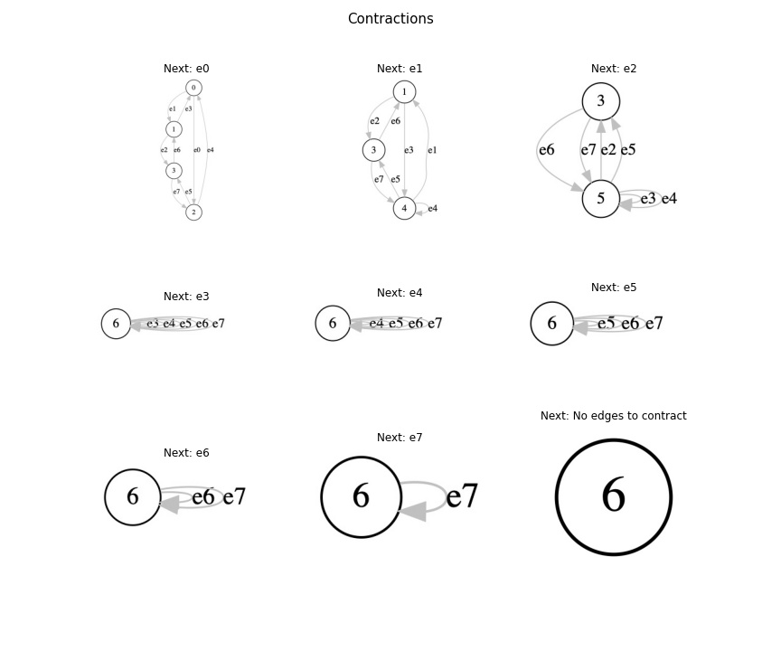
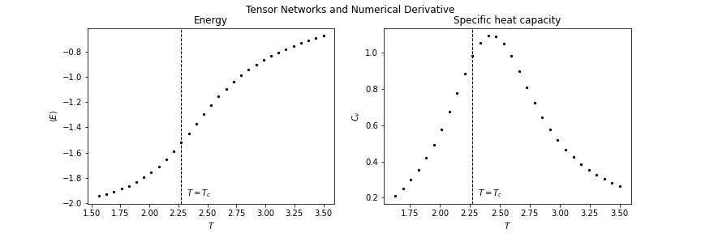
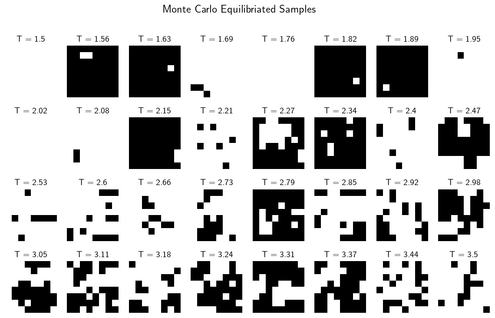
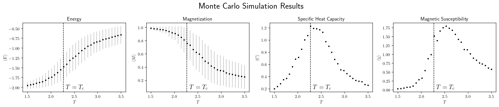
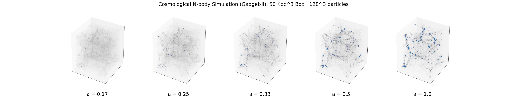
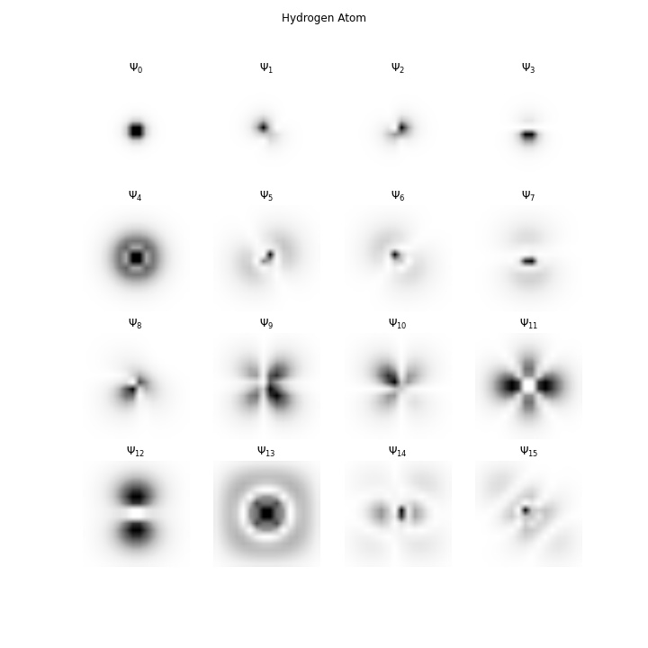
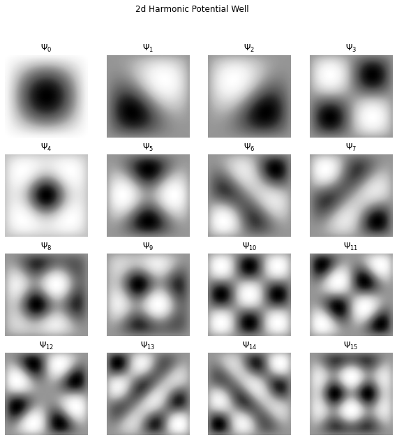

In progressSee the GitHub links for a bit more technical details.
Tensor Networks, Renormalization, and Phase Transitions
Tensor Networks are a new computational tool that finds applications in quantum many-body physics and machine learning. Among many of its applications, it allows for efficiently parametrizing high dimensional Hilbert spaces of quantum systems of interest and also provides a computationally tractable representation of partition functions involving lattice Hamiltonians (see Ising Model for an application to the Ising Hamiltonian using the Google's Tensor Network library).
The network can be thought of as a graph representation of a complicated array contraction, like a long series of matrix multiplication. Since contraction is associative, the order does not make a difference to the answer but the computational cost heavily relies on the order. Finding the optimal order is a discrete optimization problem(tough), and renormalization approaches can iteratively simplify the graph to give approximate answers.
The following tensor network contraction gives the partition function for the Ising Hamiltonian on a lattice with periodic boundary conditions (larger networks failed to contract on my laptop).

We can see that the code works by checking the thermodynamic variables (these results are exact).

Results can be compared against a Monte Carlo simulation. See Ising Model for the results of an \( 8\times8 \) lattice:


Cosmology

We would not be here if not for dark matter. Matter cannot aggregate gravitationally to form structures due to radiation pressure until the universe can cool down considerably. However, dark matter interacts gravitationally alone so that it could form bound structures and form gravitational potential buckets for the matter to fall in later when the universe cooled down. Stars later lit up the 'dark' dark matter haloes!
Understanding the nature of primordial fluctuations, the seed of all structures in the universe, is a fundamental problem in modern physics. One tool to study this is the N-body simulation codes like the Gadget-II, which connects these fluctuations to present-day large-scale structures.
Fluid Dynamics
The Navier-Stokes equations (mass, momentum, and energy continuity. equations in fluids) can describe everything from stirring a cup of coffee to the earth's climate. Predicting the fluid flow is challenging even with the complete knowledge of initial conditions. Most algorithms require massive parallelization, and there are many pesky numerical instabilities in simulations.
I studied the driven lid cavity problem (think of a 2D box stirred from the top edge) for my MSc thesis using the Lattice Boltzmann method (LBM). LBM is a numerical scheme stemming from kinetic theory using a discretized version of the Boltzmann equation with an ad-hoc collision operator defined to emulate fluid behavior. Since it only uses array movements and arithmetic operations, LBM is economical in the low Reynolds number regime where the LBM approximation is more faithful.
Quantum Mechanics
Deriving the spectrum and the eigenvalues of the Hydrogen atom using the series solution to the Schrodinger equation is an analytical nightmare. The operator method (see section 6.2 of Principles of Quantum Mechanics, David Skinner is also much work. I enjoyed both approaches, but you can use the finite difference approximation if you need a feel of the solutions in no time.
In 1 dimension, the second derivative can be approximated as a difference, and the Schrodinger equation equates to a matrix eigenvalue problem after discretizing the potential. This formalism can easily be extended to 3d using tensor products, and voila, you have the answers!


Chaos in the Lorenz Attractor System
The Lorenz system arose in a simplified description of atmospheric convection and is probably the best-known example of a chaotic system. The following system of differential equations defines it:
$$ \frac{dx}{dt} = \sigma \left( y - x \right),$$
$$ \frac{dy}{dt} = x \left( \rho - z \right) - y \text{ , and, } $$
$$ \frac{dz}{dt} = xy - \beta z.$$
\( \alpha, \beta, \) and \( \sigma \) are parameters of the system.
The defining property of chaotic systems is approximate initial conditions cannot predict approximate futures whereas exact initial conditions can predict exact future.
The popular notion of the butterfly effect (the flap of a butterfly's wing affecting a tornado weeks later) is a metaphorical version of this phenomenon of sensitive dependence on initial conditions. The shape of the solutions also resembles a butterfly to the romanticization's merit.
A particle cloud of \( N = 1000 \), points starting about \( [1, 1, 1] \), is integrated this way. You can see how quickly these particles (red dots) diverge from the solution for the starting point \( [1, 1, 1] \) (golden curve).
Patent Landscape Study of Quantum Technologies
In 2021, I wrote a patent landscape study report for Relecura Technologies, analyzing around 50k patents in quantum technologies using natural language processing tools. The report includes elementary physics explanations of the technologies aimed at policymakers and investors.